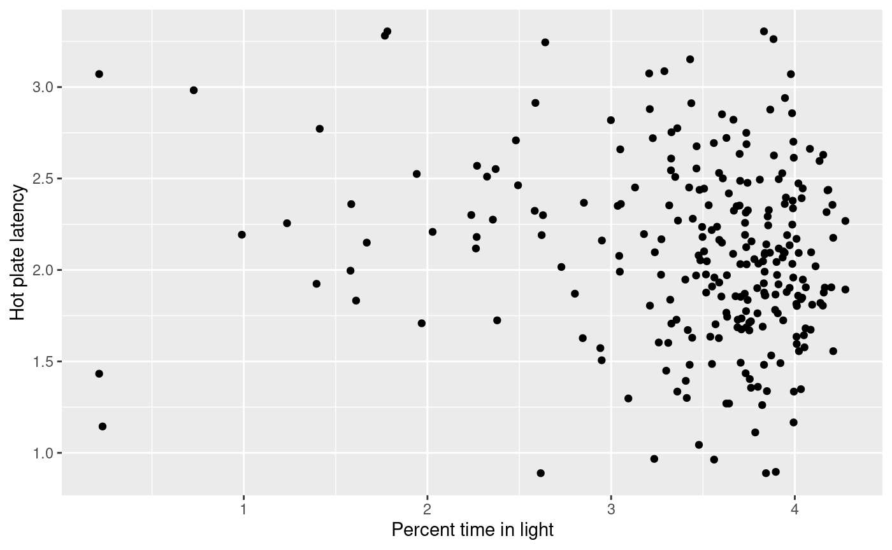
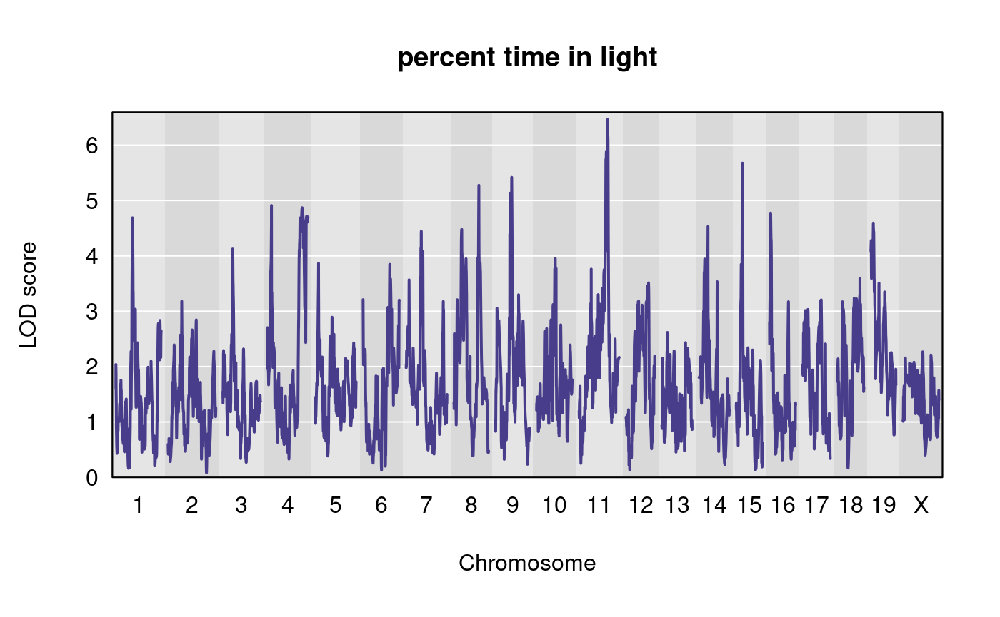
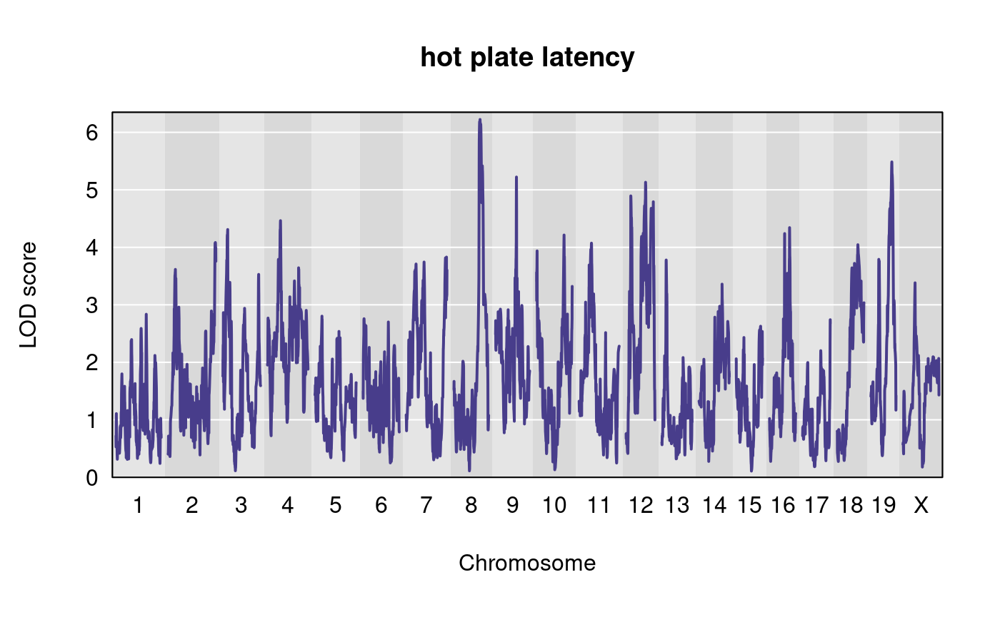
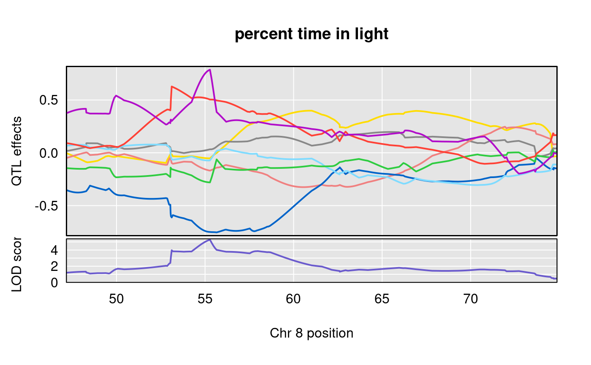
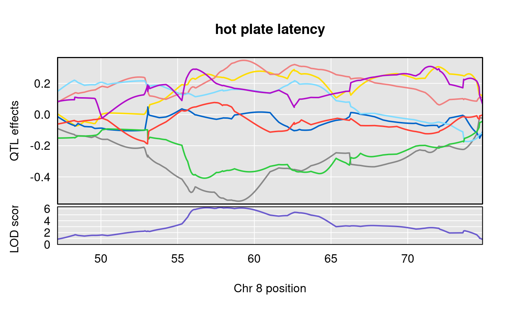
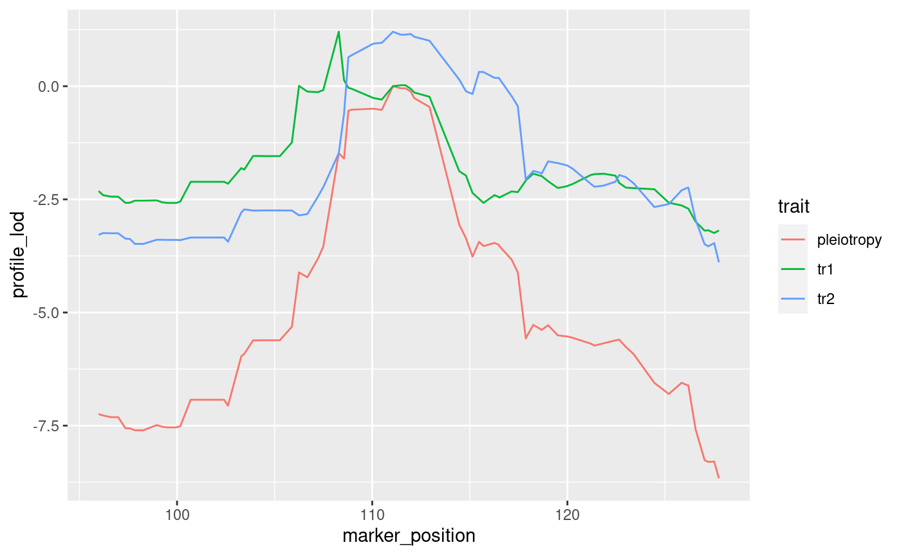

is_inst <- function(pkg) { nzchar(system.file(package = pkg)) } qtl2_indic <- is_inst("qtl2") knitr::opts_chunk$set(eval = qtl2_indic)
library(dplyr)
##
## Attaching package: 'dplyr'## The following objects are masked from 'package:stats':
##
## filter, lag## The following objects are masked from 'package:base':
##
## intersect, setdiff, setequal, unionqtl2data github repositoryWe illustrate functions from qtl2pleio by analyzing data from 261 Diversity Outbred mice (Recla et al. 2014, @logan2013high).
file <- paste0("https://raw.githubusercontent.com/rqtl/", "qtl2data/master/DO_Recla/recla.zip") recla <- read_cross2(file) # make sex a covariate for use in qtl2pleio::scan_pvl recla[[6]][ , 1, drop = FALSE] -> sex # insert pseudomarkers insert_pseudomarkers(recla, step = 0.10) -> pseudomap gm <- pseudomap$`8`
We use the hidden Markov model from Broman (2012a) and Broman (2012b) (as implemented in Broman et al. (2019)) to calculate 36-state genotype probabilities for autosomal markers.
probs <- calc_genoprob(recla, map = pseudomap, cores = 1)
We then convert the genotype probabilities to haplotype dosages.
aprobs <- genoprob_to_alleleprob(probs)
We calculate kinship matrices, by the “leave one chromosome out (loco)” method.
kinship <- calc_kinship(aprobs, "loco")
Before performing our QTL mapping, we transform the phenotypes.
recla$pheno -> ph log(ph) -> lph apply(FUN = broman::winsorize, X = lph, MARGIN = 2) -> wlph as_tibble(wlph) -> wlph_tib
We next perform the univariate QTL scan for all phenotypes.
sex2 <- matrix(as.numeric(sex == "female"), ncol = 1) colnames(sex2) <- "female" rownames(sex2) <- rownames(aprobs[[1]]) out <- scan1(genoprobs = aprobs, pheno = wlph, kinship = kinship, addcovar = sex2, reml = TRUE )
We want to look closely at those peaks on Chromosome 8. We’ll save the positions of peaks for our two traits of interest.
(peaks <- find_peaks(out, pseudomap, threshold = 5) %>% dplyr::arrange(chr, pos) %>% dplyr::select(- lodindex))
## lodcolumn chr pos lod
## 1 bw 1 23.9075 5.471580
## 2 OF_distance_first4 1 43.2385 5.772977
## 3 LD_transitions 1 95.8075 5.028258
## 4 OF_distance 2 49.9770 5.544458
## 5 bw 2 52.3932 7.352334
## 6 OF_immobile_pct 2 53.2646 9.771814
## 7 VC_bottom_distance_first4 2 71.0160 6.531654
## 8 OF_distance_first4 3 10.7360 5.541166
## 9 VC_bottom_distance_first4 3 16.3700 5.518637
## 10 VC_top_time_pct 3 17.9390 5.951067
## 11 LD_distance_light 3 23.4390 5.203246
## 12 bw 3 24.8390 5.632714
## 13 VC_top_time_first4 3 48.1280 6.144073
## 14 VC_top_velocity 3 48.5630 6.264824
## 15 VC_top_time_first4 4 3.5340 5.016970
## 16 OF_corner_pct 4 9.0111 6.272996
## 17 OF_immobile_pct 4 37.5206 5.529985
## 18 LD_distance_light 4 71.2992 5.040185
## 19 bw 5 10.0740 5.728865
## 20 VC_bottom_distance_first4 5 19.9741 5.419061
## 21 VC_top_time_first4 5 20.0741 6.075282
## 22 VC_bottom_distance 5 20.5930 5.691913
## 23 VC_bottom_time_pct 5 20.5930 6.360001
## 24 TS_latency_immobile 5 43.3504 5.995115
## 25 OF_corner_pct 5 64.2551 5.665658
## 26 OF_immobile_pct 6 53.4292 6.968771
## 27 TS_frequency_climbing 6 57.0362 5.361091
## 28 bw 7 9.1778 6.057098
## 29 TS_time_immobile 7 49.4778 8.067612
## 30 VC_bottom_distance 7 54.5591 5.011113
## 31 OF_distance_first4 7 57.9454 5.327302
## 32 VC_top_distance 7 83.8778 5.724788
## 33 OF_immobile_pct 7 83.9778 5.823555
## 34 TS_frequency_climbing 8 48.1732 5.483064
## 35 LD_distance_light 8 55.2762 5.323391
## 36 LD_light_pct 8 55.2762 5.274185
## 37 HP_latency 8 57.7732 6.223739
## 38 LD_distance_light 9 36.6965 5.196968
## 39 LD_light_pct 9 36.6965 5.417419
## 40 VC_top_time_first4 9 38.4834 5.109813
## 41 VC_top_time_pct 9 39.2680 6.356432
## 42 HP_latency 9 46.8502 5.222074
## 43 bw 10 3.7781 6.526199
## 44 OF_distance_first4 10 29.6698 5.462975
## 45 VC_bottom_time_pct 10 32.5438 5.432804
## 46 OF_periphery_pct 10 74.8530 5.246487
## 47 VC_top_distance 11 7.8200 6.245803
## 48 VC_top_distance_first4 11 11.6236 5.486915
## 49 VC_bottom_distance_first4 11 54.3420 5.367052
## 50 LD_transitions 11 58.9000 5.903217
## 51 VC_bottom_transitions 11 60.5984 5.114051
## 52 LD_light_pct 11 63.3943 6.464176
## 53 LD_distance_light 11 63.4514 6.373437
## 54 VC_top_time_pct 12 20.5776 6.950143
## 55 VC_bottom_velocity 12 21.7760 5.653292
## 56 OF_center_pct 12 35.5140 6.399422
## 57 HP_latency 12 43.5150 5.131074
## 58 OF_periphery_pct 12 53.5776 7.240951
## 59 OF_corner_pct 13 59.7966 6.594594
## 60 VC_bottom_time_first4 14 11.9183 5.204368
## 61 VC_bottom_distance_first4 14 12.5316 5.763233
## 62 VC_bottom_transitions 14 12.5316 6.478533
## 63 VC_top_velocity 14 12.7819 6.840412
## 64 VC_bottom_distance 14 14.5316 5.592029
## 65 TS_frequency_climbing 14 21.1141 5.372594
## 66 OF_center_pct 14 53.7316 5.377182
## 67 TS_frequency_climbing 15 12.6680 6.043265
## 68 LD_light_pct 15 15.2374 5.674921
## 69 OF_distance_first4 16 23.2656 5.242102
## 70 VC_top_distance 17 15.6390 6.669277
## 71 VC_top_velocity 18 8.3750 5.558628
## 72 VC_top_time_first4 18 17.8068 6.246206
## 73 LD_transitions 18 37.4182 5.090332
## 74 VC_bottom_distance_first4 19 24.9615 7.362557
## 75 VC_bottom_time_first4 19 24.9615 7.499959
## 76 OF_immobile_pct 19 31.9505 5.639812
## 77 HP_latency 19 47.7977 5.485000Given that the two traits “percent time in light” and “distance traveled in light” share a peak, we want to ask how correlated they are.
cor(wlph[ , 7], wlph[ , 10], use = "complete.obs")
## [1] 0.8859402cor(wlph[ , 22], wlph[ , 10], use = "complete.obs")
## [1] -0.1507317cor(wlph[ , 7], wlph[ , 22], use = "complete.obs")
## [1] -0.143598Since “percent time in light” and “distance traveled in light” are very highly correlated, we’ll discard “distance traveled in light” and perform subsequent analyses with only “percent time in light” and the second trait, “hot plate latency”.
We create a scatter plot for the two phenotypes, “hot plate latency” and “percent time in light”.
ggplot() + geom_point(data = wlph_tib, aes(y = HP_latency, x = LD_light_pct)) + labs(x = "Percent time in light", y = "Hot plate latency")
## Warning: Removed 3 rows containing missing values (geom_point).
Let’s plot the results of the univariate QTL scans for our two traits.
plot(out, map = pseudomap, lodcolumn = 10, main = "percent time in light" )

plot(out, map = pseudomap, lodcolumn = 22, main = "hot plate latency" )

We examine the allele effects plots for our two traits, in the region of interest on Chromosome 8.
scan1coef(aprobs[ , 8], pheno = wlph[ , 10], kinship = kinship$`8`, reml = TRUE, addcovar = sex2) -> s1c_10 scan1coef(aprobs[ , 8], pheno = wlph[ , 22], kinship = kinship$`8`, reml = TRUE, addcovar = sex2) -> s1c_22
# subset scan1output objects s1c_10s <- s1c_10[650:999, ] # 650:999 is the same as the interval for the two-dimensional scan. s1c_22s <- s1c_22[650:999, ]
plot_coefCC(s1c_10s, scan1_output = out[ , 10, drop = FALSE], map = pseudomap, main = "percent time in light")

plot_coefCC(s1c_22s, scan1_output = out[ , 22, drop = FALSE], map = pseudomap, main = "hot plate latency")

We present the code that we ran to perform the two-dimensional scan.
scan_pvl(probs = aprobs$`8`, pheno = wlph[, c(10, 22)], addcovar = sex2, kinship = kinship$`8`, start_snp = 650, n_snp = 350) -> pvl1022
To save computing time, we read the two-dimensional scan results from Zenodo. Because the Zenodo file was created with an older version of scan_pvl, it contains the log (natural base) likelihoods, rather than log10 likelihoods. Thus, we’ll want to rectify this, which we do with code below.
as_tibble(read.table("https://zenodo.org/record/3210710/files/recla-10-22.txt?download=1", stringsAsFactors = FALSE)) -> pvl1022
We then calculate the likelihood ratio test statistic.
(mylrt <- calc_lrt_tib(pvl1022))
## [1] 2.771408We create a profile LOD plot.
colnames(recla$pheno)[c(10, 22)] <- c("Percent time in light", "Hot plate latency") pvl1022 %>% mutate(log10lik = loglik / log(10)) %>% dplyr::select(- loglik) %>% calc_profile_lods() %>% add_pmap(pmap = recla$pmap$`8`) %>% ggplot() + geom_line(aes(x = marker_position, y = profile_lod, colour = trait))
## Joining, by = "marker"
First, we find the pleiotropy peak marker. This is the marker for which the log likelihood is maximized under the constraint of pleiotropy.
find_pleio_peak_tib(pvl1022, start_snp = 650)
## loglik139
## 788We need the pleiotropy peak marker in the bootstrap analyses because it is the marker used in drawing bootstrap samples.
To save computing time, we read the bootstrap results files from Github. For details of how we performed the bootstrap analyses on the University of Wisconsin-Madison Center for High-Throughput Computing, please see the documentation in the qtl2pleio-manuscript repository: https://github.com/fboehm/qtl2pleio-manuscript.
The code below creates a temporary directory “tmp” in the user’s working directory. We then read results files from Github. Each text file contains a single likelihood ratio test statistic from a bootstrap sample.
## read boot lrt files boot_lrt <- list() for (i in 1:1000){ n <- i - 1 fn <- paste0("https://raw.githubusercontent.com/fboehm/qtl2pleio-manuscript-chtc/master/Recla-bootstrap/results/recla-boot-run561_", n, ".txt") boot_lrt[i] <- read.table(fn) } # convert list to numeric vector boot_lrt <- unlist(boot_lrt)
We get a bootstrap p-value by comparing the above vector’s values to mylrt, the test statistic for the observed data.
## [1] 0.109devtools::session_info()
## ─ Session info ───────────────────────────────────────────────────────────────
## setting value
## version R version 4.0.0 (2020-04-24)
## os Ubuntu 20.04 LTS
## system x86_64, linux-gnu
## ui X11
## language (EN)
## collate en_US.UTF-8
## ctype en_US.UTF-8
## tz America/New_York
## date 2020-07-01
##
## ─ Packages ───────────────────────────────────────────────────────────────────
## package * version date lib source
## assertthat 0.2.1 2019-03-21 [2] CRAN (R 4.0.0)
## backports 1.1.8 2020-06-17 [2] CRAN (R 4.0.0)
## bit 1.1-15.2 2020-02-10 [2] CRAN (R 4.0.0)
## bit64 0.9-7 2017-05-08 [2] CRAN (R 4.0.0)
## blob 1.2.1 2020-01-20 [2] CRAN (R 4.0.0)
## broman 0.69-5 2019-04-11 [2] CRAN (R 4.0.0)
## callr 3.4.3 2020-03-28 [2] CRAN (R 4.0.0)
## cli 2.0.2 2020-02-28 [2] CRAN (R 4.0.0)
## colorspace 1.4-1 2019-03-18 [2] CRAN (R 4.0.0)
## crayon 1.3.4 2017-09-16 [2] CRAN (R 4.0.0)
## data.table 1.12.8 2019-12-09 [2] CRAN (R 4.0.0)
## DBI 1.1.0 2019-12-15 [2] CRAN (R 4.0.0)
## desc 1.2.0 2018-05-01 [2] CRAN (R 4.0.0)
## devtools 2.3.0 2020-04-10 [2] CRAN (R 4.0.0)
## digest 0.6.25 2020-02-23 [2] CRAN (R 4.0.0)
## dplyr * 1.0.0 2020-05-29 [2] CRAN (R 4.0.0)
## ellipsis 0.3.1 2020-05-15 [2] CRAN (R 4.0.0)
## evaluate 0.14 2019-05-28 [2] CRAN (R 4.0.0)
## fansi 0.4.1 2020-01-08 [2] CRAN (R 4.0.0)
## farver 2.0.3 2020-01-16 [2] CRAN (R 4.0.0)
## fs 1.4.1 2020-04-04 [2] CRAN (R 4.0.0)
## generics 0.0.2 2018-11-29 [2] CRAN (R 4.0.0)
## ggplot2 * 3.3.2 2020-06-19 [2] CRAN (R 4.0.0)
## glue 1.4.1 2020-05-13 [2] CRAN (R 4.0.0)
## gtable 0.3.0 2019-03-25 [2] CRAN (R 4.0.0)
## htmltools 0.5.0 2020-06-16 [2] CRAN (R 4.0.0)
## jsonlite 1.6.1 2020-02-02 [2] CRAN (R 4.0.0)
## knitr 1.28 2020-02-06 [2] CRAN (R 4.0.0)
## labeling 0.3 2014-08-23 [2] CRAN (R 4.0.0)
## lifecycle 0.2.0 2020-03-06 [2] CRAN (R 4.0.0)
## magrittr 1.5 2014-11-22 [2] CRAN (R 4.0.0)
## MASS 7.3-51.6 2020-04-26 [2] CRAN (R 4.0.0)
## memoise 1.1.0 2017-04-21 [2] CRAN (R 4.0.0)
## munsell 0.5.0 2018-06-12 [2] CRAN (R 4.0.0)
## pillar 1.4.4 2020-05-05 [2] CRAN (R 4.0.0)
## pkgbuild 1.0.8 2020-05-07 [2] CRAN (R 4.0.0)
## pkgconfig 2.0.3 2019-09-22 [2] CRAN (R 4.0.0)
## pkgdown 1.5.1 2020-04-09 [2] CRAN (R 4.0.0)
## pkgload 1.1.0 2020-05-29 [2] CRAN (R 4.0.0)
## prettyunits 1.1.1 2020-01-24 [2] CRAN (R 4.0.0)
## processx 3.4.2 2020-02-09 [2] CRAN (R 4.0.0)
## ps 1.3.3 2020-05-08 [2] CRAN (R 4.0.0)
## purrr 0.3.4 2020-04-17 [2] CRAN (R 4.0.0)
## qtl2 * 0.22-8 2020-06-26 [2] CRAN (R 4.0.0)
## qtl2pleio * 1.3.0 2020-07-01 [1] local
## R6 2.4.1 2019-11-12 [2] CRAN (R 4.0.0)
## Rcpp 1.0.4.6 2020-04-09 [2] CRAN (R 4.0.0)
## remotes 2.1.1 2020-02-15 [2] CRAN (R 4.0.0)
## rlang 0.4.6 2020-05-02 [2] CRAN (R 4.0.0)
## rmarkdown 2.3 2020-06-18 [2] CRAN (R 4.0.0)
## rprojroot 1.3-2 2018-01-03 [2] CRAN (R 4.0.0)
## RSQLite 2.2.0 2020-01-07 [2] CRAN (R 4.0.0)
## rstudioapi 0.11 2020-02-07 [2] CRAN (R 4.0.0)
## scales 1.1.1 2020-05-11 [2] CRAN (R 4.0.0)
## sessioninfo 1.1.1 2018-11-05 [2] CRAN (R 4.0.0)
## stringi 1.4.6 2020-02-17 [2] CRAN (R 4.0.0)
## stringr 1.4.0 2019-02-10 [2] CRAN (R 4.0.0)
## testthat 2.3.2 2020-03-02 [2] CRAN (R 4.0.0)
## tibble 3.0.1 2020-04-20 [2] CRAN (R 4.0.0)
## tidyselect 1.1.0 2020-05-11 [2] CRAN (R 4.0.0)
## usethis 1.6.1 2020-04-29 [2] CRAN (R 4.0.0)
## vctrs 0.3.1 2020-06-05 [2] CRAN (R 4.0.0)
## withr 2.2.0 2020-04-20 [2] CRAN (R 4.0.0)
## xfun 0.15 2020-06-21 [2] CRAN (R 4.0.0)
## yaml 2.2.1 2020-02-01 [2] CRAN (R 4.0.0)
##
## [1] /tmp/RtmpOzXNnc/temp_libpath130b0529daeb1
## [2] /home/fred/R/x86_64-pc-linux-gnu-library/4.0
## [3] /usr/local/lib/R/site-library
## [4] /usr/lib/R/site-library
## [5] /usr/lib/R/libraryBroman, Karl W. 2012a. “Genotype Probabilities at Intermediate Generations in the Construction of Recombinant Inbred Lines.” Genetics 190 (2): 403–12.
———. 2012b. “Haplotype Probabilities in Advanced Intercross Populations.” G3: Genes, Genomes, Genetics 2 (2): 199–202.
Broman, Karl W, Daniel M Gatti, Petr Simecek, Nicholas A Furlotte, Pjotr Prins, Śaunak Sen, Brian S Yandell, and Gary A Churchill. 2019. “R/Qtl2: Software for Mapping Quantitative Trait Loci with High-Dimensional Data and Multiparent Populations.” Genetics 211 (2): 495–502.
Logan, Ryan W, Raymond F Robledo, Jill M Recla, Vivek M Philip, Jason A Bubier, Jeremy J Jay, Carter Harwood, et al. 2013. “High-Precision Genetic Mapping of Behavioral Traits in the Diversity Outbred Mouse Population.” Genes, Brain and Behavior 12 (4): 424–37.
Recla, Jill M, Raymond F Robledo, Daniel M Gatti, Carol J Bult, Gary A Churchill, and Elissa J Chesler. 2014. “Precise Genetic Mapping and Integrative Bioinformatics in Diversity Outbred Mice Reveals Hydin as a Novel Pain Gene.” Mammalian Genome 25 (5-6): 211–22.